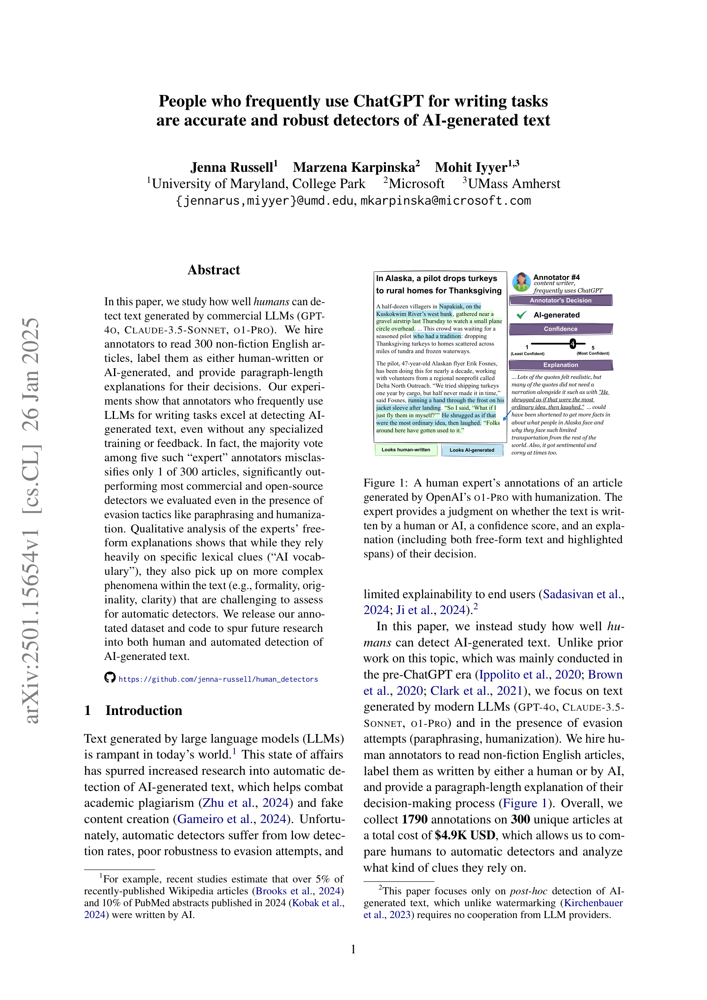
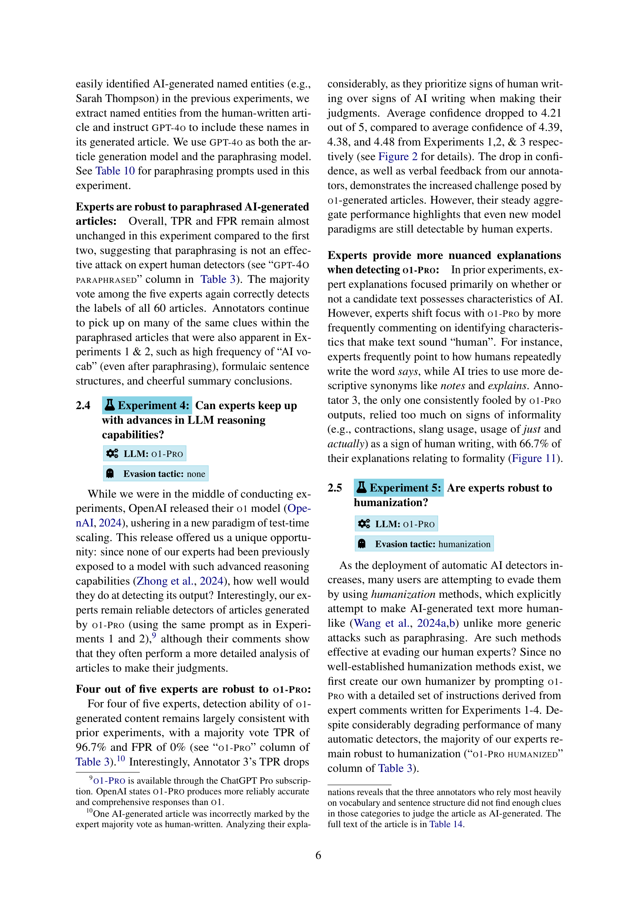
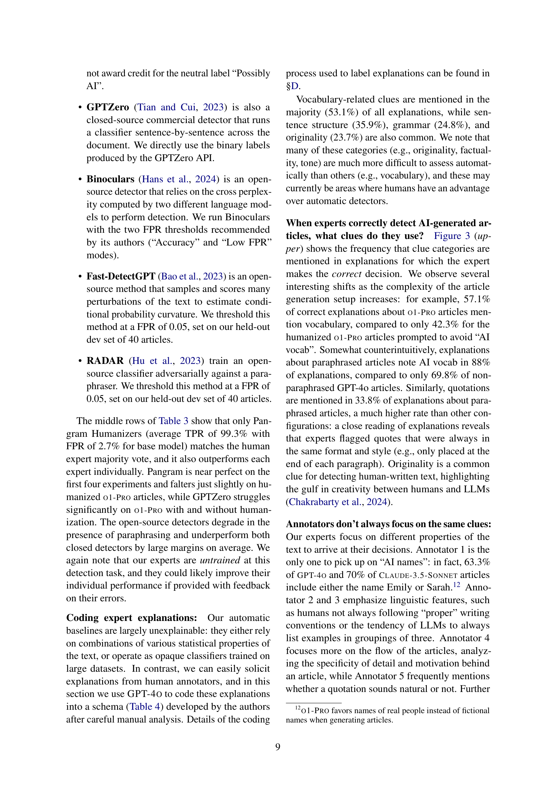

Figure 1
LLM을 글쓰기에 자주 사용하는 사람들이 별도의 훈련 없이도 AI 생성 텍스트를 거의 완벽하게 탐지할 수 있음을 밝힌 연구이다. 5명의 "전문가" 주석자의 다수결은 300편의 기사 중 단 1편만 오분류하여(TPR 99.3%, FPR 0%), paraphrasing과 humanization 회피 전술에도 강건하며, Pangram을 제외한 모든 상용/오픈소스 자동 탐지기를 크게 능가한다. 전문가들의 판단 근거를 14개 범주로 체계적으로 분석하여 AI 텍스트의 특징적 "서명"을 밝힌다.

Figure 2

Figure 3
AI 생성 텍스트 탐지 분야에서 매우 시의적절하고 실용적인 기여를 한 연구이다. 핵심 발견인 "LLM 글쓰기 빈번 사용자가 최고의 탐지자"라는 결과는 단순하지만 설득력 있으며, 학술 부정행위 탐지, 가짜 뉴스 식별 등 high-stakes 상황에서의 실용적 함의가 크다. 실험 설계가 체계적이며(5단계 난이도 증가, minimal pair, within-subjects), 1,500개의 문단 길이 설명과 14개 범주 분류 체계는 AI 텍스트의 고유 특성에 대한 귀중한 질적 데이터를 제공한다. 특히 Table 12의 "AI vocabulary" 목록과 Table 4의 탐지 단서 분류 체계는 교육/실무 자료로서의 가치가 높다. 다만, O1-Pro humanization에서 Annotator 3이 TPR 0%를 기록한 것처럼 개별 전문가의 편차가 크며, 이는 다수결이 아닌 개인 판단에 의존할 경우의 위험을 시사한다. LLM 기반 프롬프트 탐지기가 인간 전문가에 크게 못 미친다는 결과는, 자동 탐지와 인간 탐지 사이의 여전히 큰 간극을 보여주며, 향후 하이브리드 접근법의 필요성을 잘 보여준다.